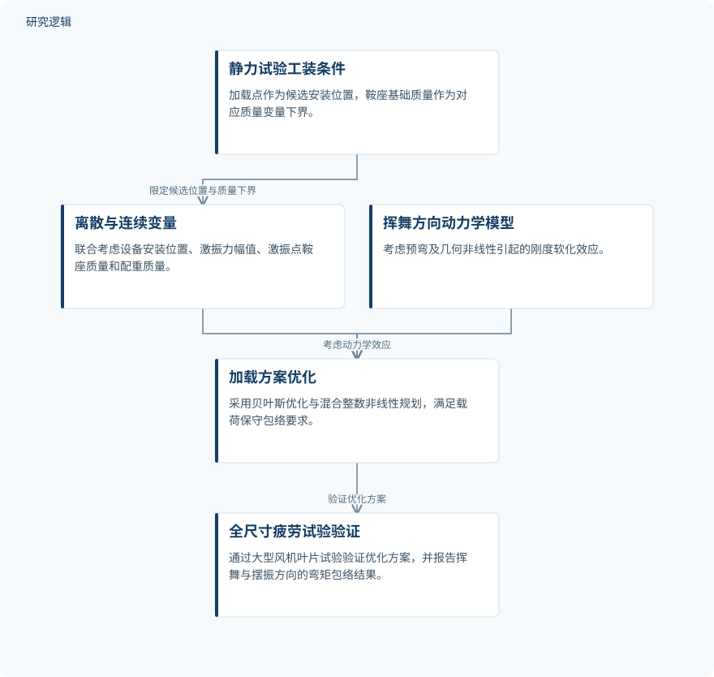

摘要解读
基于贝叶斯优化与混合整数规划的大型风电叶片共振疲劳试验加载方案优化
Bayesian‐Based Mixed‐Integer Optimization for Resonance Fatigue Testing of Large‐Scale Wind Turbine Blades
解读更新 2026-11-10 13:33 · 依据公开摘要整理，未核验全文细节
大型风机叶片疲劳试验既要满足载荷要求，也要控制工装反复开发的成本。这项研究将贝叶斯优化与混合整数非线性规划结合，探索复用静力试验工装的疲劳加载方案，值得关注的是如何同时处理安装位置、加载参数与认证约束。
文章目录
静力工装如何接续疲劳试验
大型叶片的运行可靠性需要疲劳试验支撑，但静力与疲劳等不同试验阶段若反复开发加载工装，会增加时间和资金投入。本文关注的不是单纯减少设备，而是在满足标准规定的载荷保守包络原则下，实现加载工装复用。
把安装位置与加载参数放进同一优化问题
研究提出基于贝叶斯优化与混合整数非线性规划（MINLP）的全尺寸结构疲劳试验加载方案优化方法。激振器和配重的安装位置作为离散变量；激振力幅值、激振点加载鞍座质量以及配重质量作为连续变量。
工装复用被具体写入变量约束：静力试验加载点成为疲劳试验设备的离散候选位置，各静力加载鞍座的基础质量则作为对应质量变量的下界。挥舞方向的动力学模型还考虑了预弯与几何非线性引起的刚度软化效应。
依据摘要整理的加载方案优化关系


概括工装复用约束、混合变量优化与全尺寸试验验证的关系，不代表论文原图或算法内部执行顺序。
下载 SVG图示关系说明
实线表示相邻阶段的信息流，虚线表示跨阶段联系或反馈。
静力试验工装条件 → 离散与连续变量：限定候选位置与质量下界；离散与连续变量 → 加载方案优化：混合变量优化；挥舞方向动力学模型 → 加载方案优化：考虑动力学效应；加载方案优化 → 全尺寸疲劳试验验证：验证优化方案
百米级叶片试验报告了怎样的弯矩包络
摘要报告，研究通过100米级风机叶片的全尺寸结构疲劳试验验证了优化加载方案的合理性。在挥舞和摆振疲劳试验中，优化方案均实现了对目标设计弯矩的全局安全包络。
挥舞与摆振方向实测弯矩的最大正偏差分别控制在约8.6%和16.4%，摘要称其满足IEC 61400–23标准规定的等效疲劳损伤认证要求。这些数值描述的是弯矩正偏差，不应解读为疲劳寿命提升或成本下降幅度。
验证规模与降本幅度仍需进一步阅读
本解读仅依据完整摘要。摘要未交代试验叶片数量、型号覆盖、重复试验情况，也未说明与其他加载方案或优化算法的具体比较，因此尚不能判断结果的统计稳定性和跨叶片适用范围。
摘要将缩短准备时间、兼顾成本效益列为方法价值，但未提供准备时间或费用的量化对照；贝叶斯优化与MINLP的具体耦合方式、模型校核细节及认证计算过程也无法由摘要判断。这些信息未在摘要报告，不等于论文没有开展。
阅读启发：关注工装约束如何进入可靠性优化
阅读启发：这项工作的切入点是把既有工装的位置和基础质量转化为优化约束。进一步阅读时，可重点关注载荷包络要求如何表达、刚度软化如何影响方案选择，以及工装复用收益如何核算。当前资料支持讨论试验方案优化，尚不足以将其延伸为已验证的智能运维能力。
以上为本站阅读启发与建议，不是论文已验证的结论。